レシピ難易度：★★☆☆☆
ソラコムのオフィスの扉は朝早く来た人が開けて、お客様がいつ来てもいい様にしています。当番制ではないことから、いつも「開けました」を社内のチャットに手動で通知しているのですが、結構忘れることが多く、「あれ？いま、開いてるの？」が頻発してました。ここで紹介する IoT レシピは SORACOM LTE-M Button と磁石で動くスイッチセンサー(磁気式リードスイッチ)を利用したドアのモニタリングです。ドアが開いた事を社内チャット(Slack)に通知する仕組みで、オフィスを少し快適できるのではないでしょうか。
本レシピは、動画コンテンツも用意しております。本レシピの動いている様子を、映像で確認できますので、ぜひ動画もご覧ください。
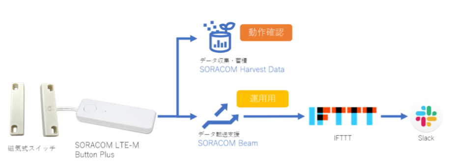
ページの内容を読み、また作業を行ったら右下の［Next］を押して次のステップへ進みます。また、［Back］を使って戻ったり、左のナビゲーションメニューでもページの移動が可能です。
左上の［×］を押してコンテンツを終了することができます。また、ページを開きなおすことで再開できます。ページのアドレスはブラウザの［履歴］メニューを利用してください。
品名 | 数量 | 価格 | 購入先 |
SORACOM LTE-M Button Plus | 1 | 7380円 | |
磁気センサー（A接点型） | 1 | 1668円 |
※金額はレシピ作成時となります。税抜き・送料別です。
サービス名 | アカウント作成費用 | URL |
SORACOM | 無料 | |
IFTTT | 無料 | |
Slack | 無料 |
システムの構築は段階的に進めます。単純なサブシステム単位で動作を確認しながら、少しずつシステムを拡張することで、意図通りに動かない場合、原因を特定しやすくなります。まずはボタンを普通に押して、SORACOM Harvestでデータの受信を確認するところから始めましょう。
作業に入る前に、SORACOM LTE-M Button PlusがIoT SIM 管理画面に登録されていることを確認します。SORACOM User Consoleから発注したボタンが届いたら、発注メニュー画面から「受け取り確認」を行わないと管理画面に登録されませんので、ご注意ください。ボタンの登録確認については、以下のページなどを参考にしてください。
https://dev.soracom.io/jp/start/enterprise_button_harvest/
本レシピでは、ボタンから受け取ったデータを、外部アプリケーション（IFTTT）に連携します。この連携設定はSIMグループに対して行うため、本レシピのために新たにSIMグループを作成する必要があります。まずは任意の名前でSIMグループを作成して下さい。SIMグループの作成方法が分からない場合、以下のページなどを参考にしてください。
https://dev.soracom.io/jp/start/console/#group
次に、ボタンの所属グループを変更し、↑で作成したSIMグループに設定します。その上で、当該SIMグループに対して、
を行います。この手順については以下のページの「ステップ 2: SIMグループを作成する」などを参考にしてください。
https://dev.soracom.io/jp/start/enterprise_button_harvest/#create_group
この状態でボタンを押せば、SORACOM Harvest上でデータの受信が確認できる筈です。SORACOM Harvestでデータを確認する手順については、以下のページの「ステップ 3: クリックし Harvest でデータを確認する」などを参考にしてください。
https://dev.soracom.io/jp/start/enterprise_button_harvest/#visualize
本システムでは、人がボタンを押すのではなく、ドアの開閉により、自動的にデータ送信する仕組みが必要です。ドアの開閉を検知するため、磁気センサーを用います。
磁気センサー（A接点型）は、磁石を近づけると通電します。これを SORACOM LTE-M Button Plus の接点入力に接続することで、磁石を近づけると、ボタンからデータ送信する仕組みが作れます。ドアの開閉時に磁石と磁気センサーが近づくように設置すれば、ドアの開閉に応じて、ボタンからデータを受け取れます。
まずは磁気センサーをボタンの接点入力に接続します。付属のケーブル先端の露出している芯線と、磁気センサーの露出している芯線を撚り合わせ、テープなどで止めてしまうのが簡単です。
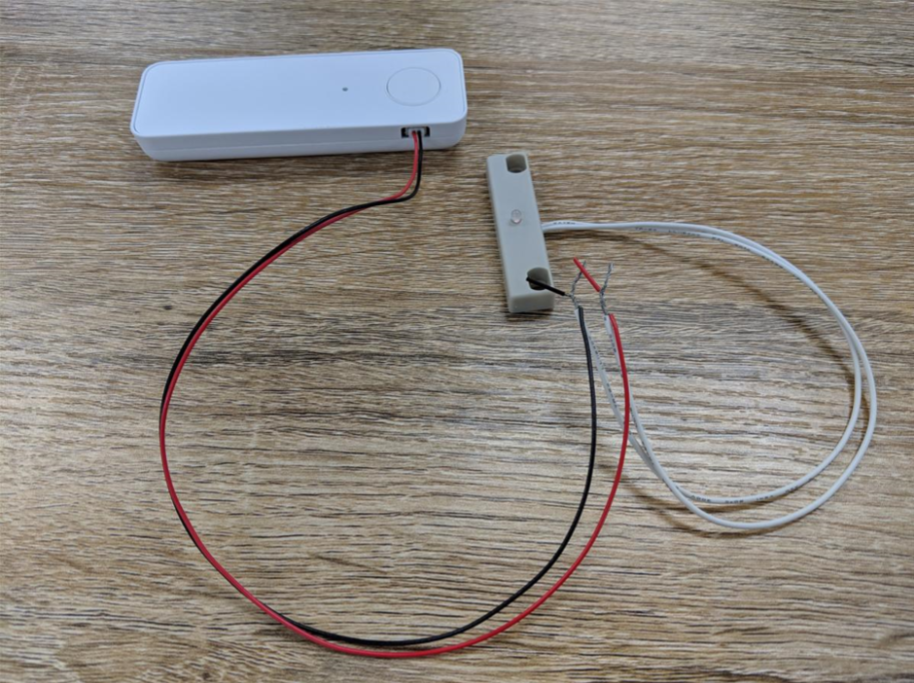
ドアに設置します。こんな感じで、ドアの隙間の両側に磁石と磁気センサーを配置し、ドアを閉じた状態で磁石と磁気センサーが接近するようにします。両面テープなどで固定してしまうのが簡単です。
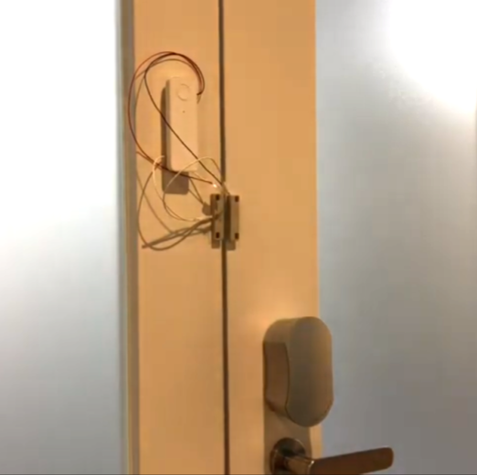
設置完了したら、ドアを開閉して、データの受信を確認しましょう。正しく設置できていれば、ドアの開閉は、ボタンを押すのと同じ意味を持ちます。ボタンを押した場合と同じく、SORACOM Harvest上でデータの受信が確認できます。
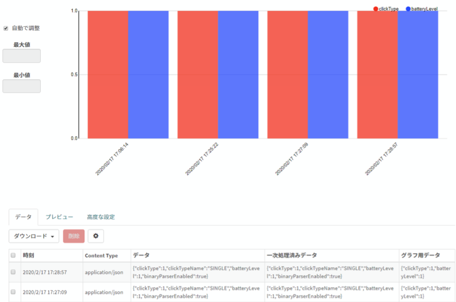
ドア開閉に応じてデータを送る動きが確認できたら、次はデータを受け取るアプリ側の設定を行います。設定の順番はSlack → IFTTT → SORACOM Beam となります。
まずはSlackの特定のchannelにメッセージを出力するIncoming Webhookの設定を行います。下記ページを開きます。
https://api.slack.com/messaging/webhooks
"Create your Slack app" を押してAppを作成します。
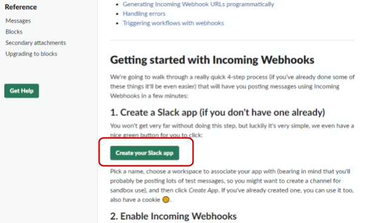
Appの "Incoming Webhooks" をenableした後、"Add New Webhook to Workspace" を押して、Webhookを追加します。
この時、 Webhook URL をメモしておいてください。
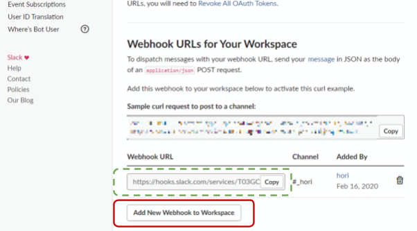
以上でSlackの設定は終了です。
新しい "IFTTT" をCreateし、トリガーとアクションをWebhookに設定します。web requestの送付先URLは、先ほどSlackでメモをしたIncoming WebhookのURLをコピーします。
設定 | 値の例 | コメント |
Event Name |
| 任意で構いませんが SORACOM Beamへ設定するURLに影響が出るため英数子文字を推奨します。 |
URL | Slackでメモした Webhook URL | |
Method |
| 例と同じようにしてください。 |
Content Type |
| 例と同じようにしてください。 |
Body |
| SlackのWebhookフォーマットに準拠する必要があります。 |
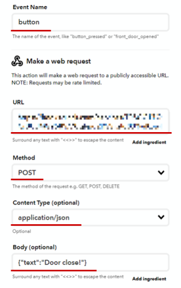
IFTTT の "My services" からWebhooksを選択し、Documentationを開きます。
ここで Your key is: の値をメモしておきます。
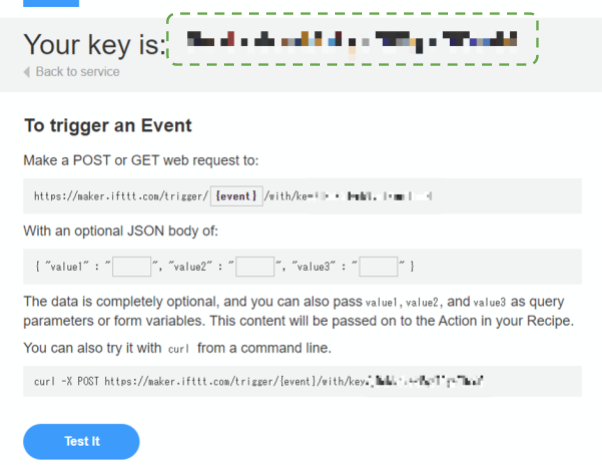
以上でIFTTTの設定は終了です。
最後に、SORACOM Beam の転送先として設定します。
ボタンが所属しているSIMグループに対し、SORACOM Beamの転送設定を追加します。
ボタンから送られるデータはUDPなので、「UDP→HTTP/HTTPS エントリポイント」を選択してください。
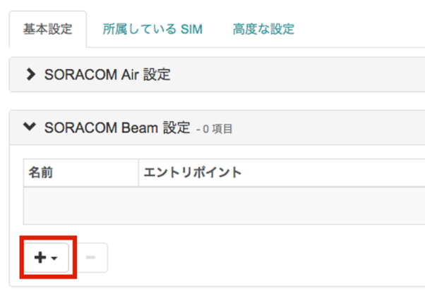
ダイアログには以下のように入力します。ヘッダやレスポンスの設定は不要です。
設定 | 値の例 | コメント |
プロトコル |
| 例と同じようにしてください。 |
ホスト名 |
| 例と同じようにしてください。 |
ポート番号 |
| 例と同じようにしてください。 |
パス |
| button のところは IFTTT の Event Name を、KEY_ID はIFTTTの Your Key ID is の値をそれぞれ置き換えてください。 |
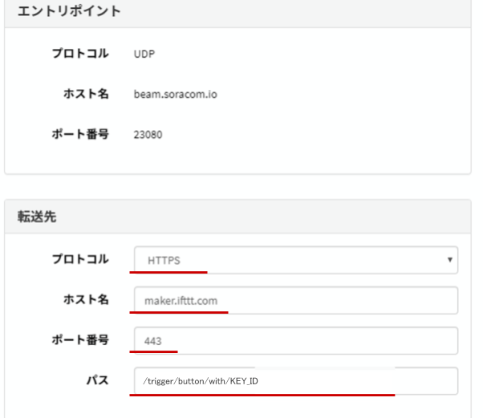
ここまでの手順で、SORACOM Beam → IFTTT → Slack のデータ連携の設定は完了です。ドアを開閉すると、Slackに通知が来るはずです。完成！
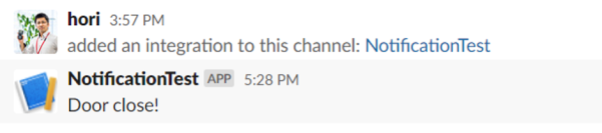
完成したところで、あらためて本システムの構成について説明します。本システムでは、
を行っています。ここで、IFTTTは、SlackのIncoming Webhookに合わせたHTTPリクエストの整形のために利用しています。
本システムの特徴は、SORACOM Unified Endpointを介することで、SORACOMサービスを活用した柔軟なシステム構成を実現していることです。（SORACOM LTE-M Buttonを採用すると、その時点でUnified Endpointを必ず通るシステムになるのですが）
IFTTTやSlackなど、データを受け取るアプリ側が存在しない状態で、最小のシステム構成で動作確認できます。磁気センサーを設置する際、ドア開閉を確実に検知するため、設置位置の細かい調整などが発生することでしょう。アプリの設定を先に済ませれば、アプリでデータの受信確認を行うことも可能ですが、そうすると、アプリ側に問題があるのか、デバイス側に問題があるのか、切り分けが必要になってしまいます。SORACOM Harvestを利用すれば、アプリを排除した最小のシステム構成で動作確認ができて、なおかつIFTTTやSlackにデータ連携する最終的なシステム構成との両立もできてしまいます。
SORACOM LTE-M Buttonから送られるデータはUDPなので、IFTTTなどのアプリでデータを受け取るためには、HTTPSなどにプロトコル変換する必要があります。これを担っているのがSORACOM Beamです。さらにSORACOM Beamが強力なのは、IFTTT以外のアプリを利用したい、となった場合、そのような大きなシステム変更が、設定の変更だけでできてしまうことです。
本システムを実際に運用してみました。一日2～3回程度のデータ送信を1ヵ月続けてみたところ 104円となりました。
plan-KM1 ※ SORACOM LTE-M Button Plus 内蔵の LTE-M 通信 | 基本料: 100円/月 通信料: 3円/月 |
SORACOM Beam | 利用料: 1円/月 |
IFTTT | 無料 |
Slack | 無料プラン利用 |
※金額はレシピ作成時となります。税抜き・送料別です。
本レシピでは、SORACOM LTE-M Button Plusと各種SORACOMサービスを活用した、ドアの開閉検知システムの構築方法を紹介しました。一旦システムが完成すれば、そのノウハウやサブシステムを流用することで、アプリケーション開発が格段に容易になります。ぜひ皆さまも、SORACOM LTE-M Button Plusを使った独自のレシピを開発してみて下さい！